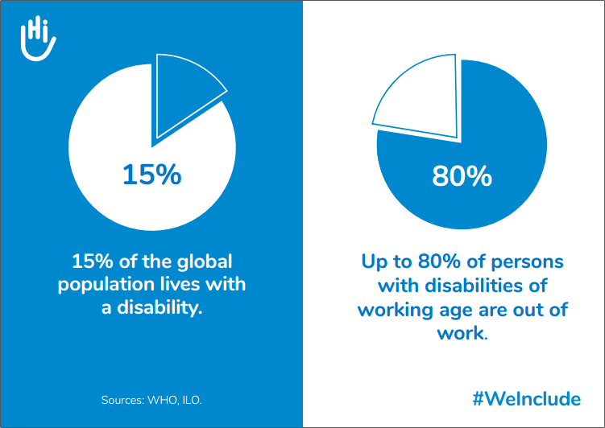

Why is Universal Design important?
Benefits to the Individual
An estimated 1.3 billion people experience a significant disability today.
This number is growing because of an increase in noncommunicable diseases and people living longer. These disabilities include vision impairments, mobility impairments, hearing impairments, learning disabilities, etc. With over 10% of the world's population that have some form of disability, it is up to designers to create solutions that will work for everyone.
In addition, with the increasing life expectancy throughout the world, we also have to take into account that our needs change as we get older. Universal design accomodates for that, allowing individuals to maintain independence for longer.
Benefits to Businesses
Universal design makes good business sense. The more people who can access your business, the more customers you’ll attract for your business to flourish, and the more profit you will collect.
Due to the increased competition in the business world, businesses have to focus on more than just making a product or service and selling it. They are starting to hold a customer-centric view when developing their solutions in order to have a competitive advantage over other businesses.
Embracing universal design also benefits reputation. By creating a meaningful, productive and successful user experience for all visitors, it sets a precedent for other companies and sets your business apart as a leader in the community who cares about the people you serve.
Its simple. Universal design will help businesses save money by investing in the most accessible products from the start, innovate and create products for everyone regardless of ability, and engage staff, promote inclusivity, and pave the way for more people with disabilities to join the workforce.